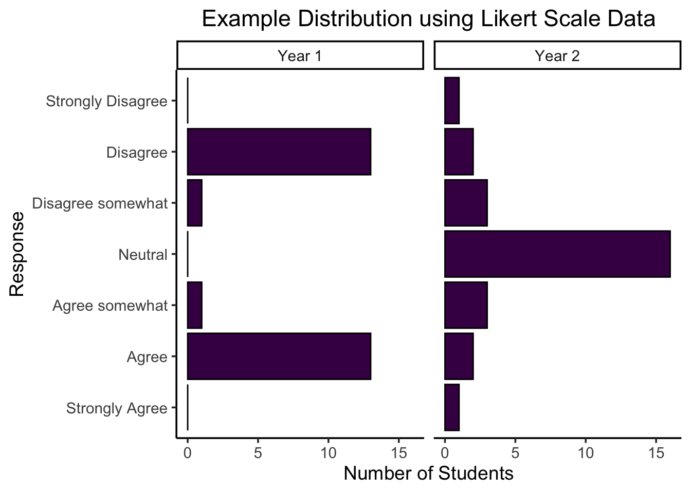
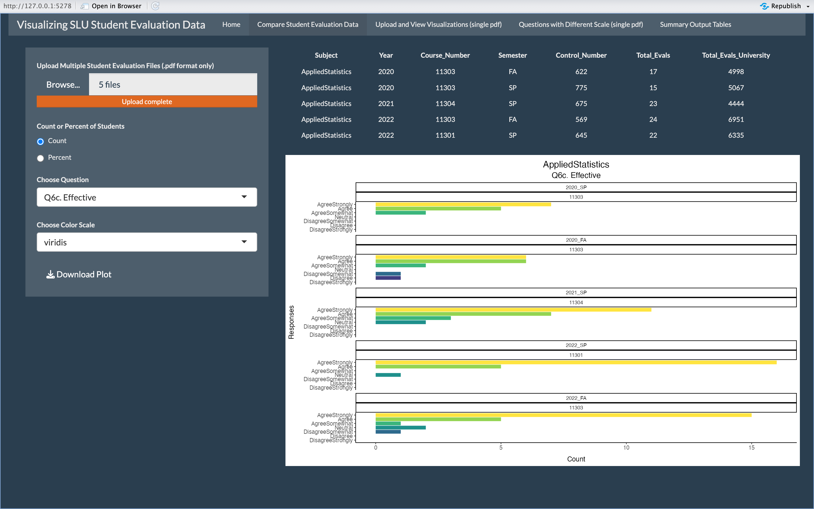
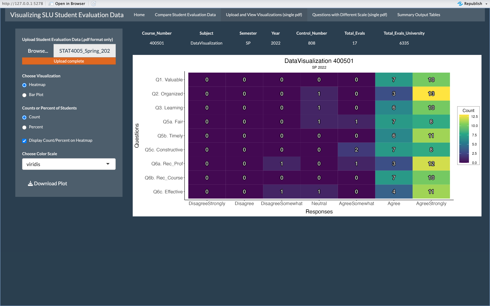
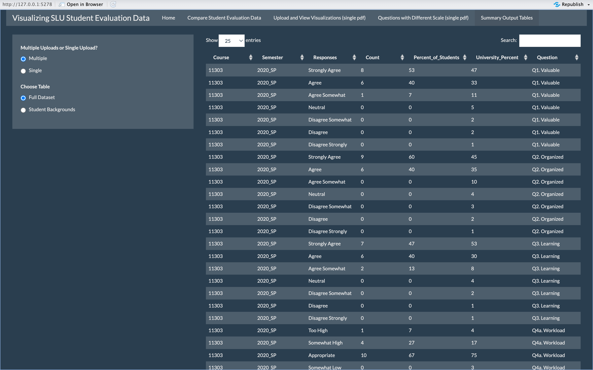
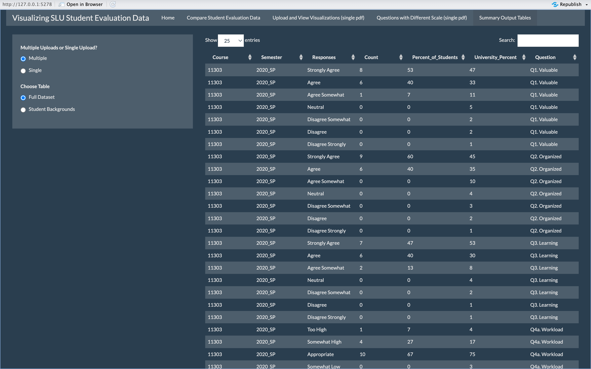
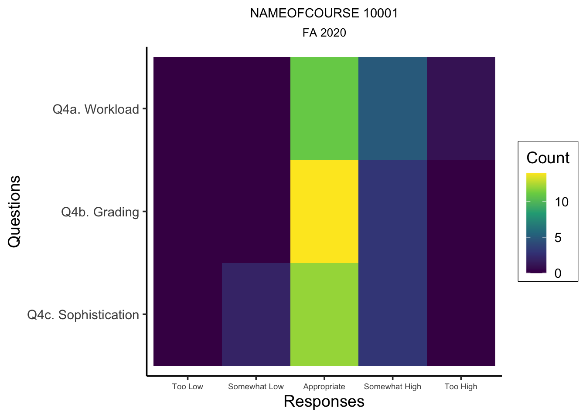

Visualizing Student Evaluation Data
Lily Kasperek
Department of Math, Computer Science, and Statistics at St. Lawrence University
Advised by Dr. Matt Higham
Goal and Description
Create Shiny App to scrape student evaluation data from PDFs and provide a more in-depth analysis of the data by providing appropriate visuals
Model and predict ordinal responses based on student class year and sex
Process
Scrape data from summary reports
Wrangle data and construct visualizations
Write functions for data scraping and wrangling
Build and test Shiny App
Fit ordinal logistic regression model and visualize
Likert Scale Data
SLU student evaluations use a 7-point Likert scale, which refers to the set of potential responses to different statements ranging from Strongly Disagree to Strongly Agree
Likert scale data is best analyzed and interpreted through visualizations, such as Heatmaps or Bar Plots, rather than mean score of responses

The mean of both data sets is the same (3 points, or Neutral) but the distributions are very different
Using the average from these two data sets fails to communicate what was actually reported by participants, illustrating the danger of using the averages of Likert Scale data
Shiny App Tabs
 

Modeling with Ordinal Logistic Regression
- Fitted ordinal logistic regression model to predict and visualize probability of student responses based on student class year and sex

Additional Visualization
- Static visualization of new question added to student evaluations

References
Barry, D. (2017). bookdown: Do not use averages with Likert scale data. https://bookdown.org/Rmadillo/likert/.
Joshi, A., Kale, S., Chandel, S., & Pal, D. K. (2015). Likert Scale: Explored and Explained. British Journal of Applied Science and Technology, 7(4), 396-403.